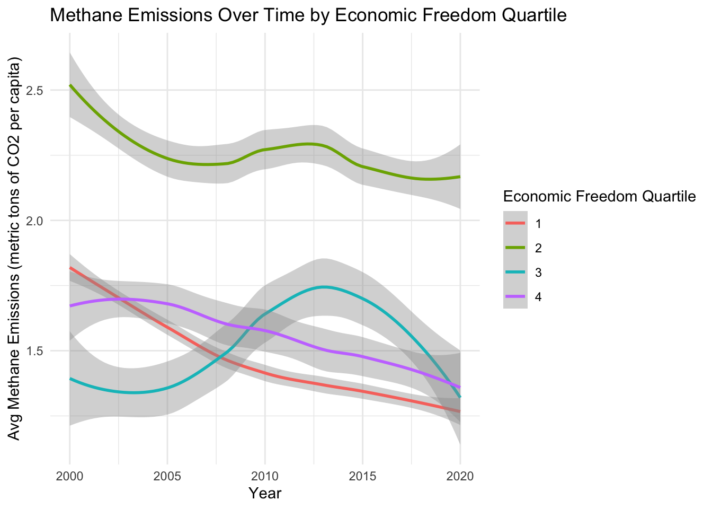
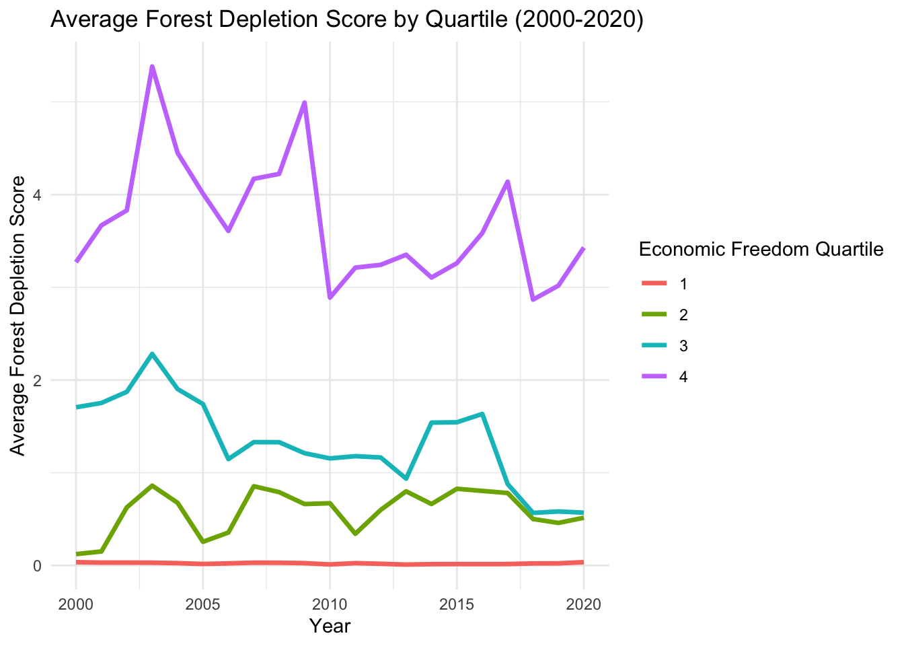

# import libraries
library(here)
library(dplyr)
library(tidyverse)
library(ggplot2)
library(janitor)
library(tidyr)
library(forecast)
library(randomForest)
library(tidyverse)
library(gplots)
# clear environment for sanity
rm(list = ls())Introduction
When we scrutinize the relationship between capitalism and environmental impacts, we’re engaging in a complex dialogue about efficiency, freedom, and sustainability. Markets act as a powerful mechanism for efficient resource allocation. Yet market-based economies, with the intrinsic drive for growth, often neglect the environmental dimension and impact. This oversight manifests in a key shortcoming: the failure to incorporate environmental costs into the pricing of goods and services.
The role of freedom in global economies brings about a dualistic impact on the environment. The positive aspects are rooted in the innovative potential and efficiency that economic freedom encourages. In a capitalist system, the competitive market can be a catalyst for discovering sustainable and economical production methods. Furthermore, the wealth generated in such systems can boost both private and public investments in environmental initiatives. Regulatory efficiency also stands out as an advantage, offering the ability to quickly adapt and respond to emerging environmental challenges. Unfortunately, there are many reasons why this idealized version falls short. At the end of the day, addressing the climate crisis is a collective action dilemma, since the actions of one person are negligible in the grand scheme of things. This makes it difficult for consumers to support climate-focused goods and services in exchange for relatively cheaper alternatives.
Now, the ugly. Capitalism often leads to aggressive resource use, resulting in issues like deforestation, loss of biodiversity, and water pollution. The tendency of capitalism to prioritize short-term profit over long-term sustainability creates a blind spot for environmental considerations. This short-sighted focus on immediate financial returns often overshadows the broader, more enduring impacts on the environment. Additionally, the burden of environmental degradation in capitalist systems is not evenly distributed. Often, it’s the less affluent communities that bear the worst of this degradation, leading to a disparity in environmental impact and quality of life. In fact, the wealthiest 10 percent of the global population are responsible for half of global emissions. (Reid 2023)
While capitalism has the potential to foster innovation and generate funds that could benefit environmental conservation, resource exploitation and prioritization of short-term profits present substantial challenges to achieving true environmental sustainability.
What is Economic Freedom?
There is certainly a level of subjectivity, or at least a certain amount of uncertainty, when scoring the freedom of an economy. As a result, it seems impossible to create a perfect score for economic freedom. However, this doesn’t mean people haven’t tried to create a spectrum to measure how free and open different economies are.
The Economic Freedom of the World: 2022 Annual Report serves as the backbone of the analysis in this exploration. The data set has a multitude of columns, the most important of which is gives each country an economic freedom index score on a scale from 1 to 10. According to the Fraser Institute, the pillars of their scoring of economic freedom depend on “personal choice, voluntary exchange, freedom to enter markets and compete, and security of the person and privately owned property.” (Gwartney 2022) This economic freedom score is measured in five areas: size of government, legal system and property rights, sound money, freedom to trade internationally, and regulation.
In addition to the economic freedom index column, there are a plethora of interesting variables that can be analyzed in this data set.
The report discusses how countries that are have higher levels of economic freedom outperform less free countries in indicators of well being. Countries in the top quartile of economic freedom saw an average per-caputa GDP of $48,251 in 2020, while countries in the bottom quartile for economic freedom had an average of $6,542. Furthermore, life expectancy in the top quartile was 80.4 years and 66 years in the bottom quartile in 2020 (Gwartney 2022) However, do these positive impacts of higher economic freedom also lead to better environmental outcomes? This analysis will put this question to the test.
Environmental Outcomes Analyzed
This analysis will consider several environmental outcomes pulled from the World Bank website. These data include freshwater withdrawal as a proportion of available freshwater resources (water stress), net forest depletion as a percentage of GNI, renewable energy output as a percentage of total energy consumption, renewable energy consumption as a percentage of total energy consumption, and methane emissions in metric tons of CO2 per capita (WorldBank 2023) Combined with the economic freedom data, this will allow for the analysis to look at the relationship between economic freedom scores and related variables to environmental outcomes over time in different countries.
Data Wrangling
First, let’s import the libraries we wlll need to conduct this analysis.
Data Cleaning
Now, let’s import and clean the data containing the freedom index and other scores by country.
# read in freedom data
freedom_raw <- read.csv('data/efw_ratings.csv', header = FALSE)This data needs a good bit of clean up. This next code chunk adjusts the column headers and converts column types appropriately.
# set the 5th row as the column names
colnames(freedom_raw) <- freedom_raw[5,]
# remove the first 4 rows since they are now empty and clean names, remove columns
freedom <- freedom_raw[-c(1:5), ] %>%
clean_names() %>%
subset(select = -na) %>%
subset(select = c(-na_2, -na_3, -na_4, -na_5)) %>%
subset(select = -world_bank_region) %>%
subset(select = -world_bank_current_income_classification_1990_present)
# convert year columns from char to num
freedom <- freedom %>%
mutate(across(6:ncol(freedom), as.numeric)) %>%
mutate(economic_freedom_summary_index = as.numeric(as.character(economic_freedom_summary_index)))Now, lets move on to reading in the next dataset. The freedom data serves as the policy side of the data – now we want to append and compare environmental outcomes based on different political and economic factors.
# read in esg data
esg_wb <- read.csv('data/esg_wb.csv') %>%
clean_names()This data also needs to be cleaned up a bit. Let’s get to work.
column_names <- c("x1998_yr1998", "x1999_yr1999", "x2000_yr2000",
"x2001_yr2001", "x2002_yr2002", "x2003_yr2003",
"x2004_yr2004", "x2005_yr2005", "x2006_yr2006",
"x2007_yr2007", "x2008_yr2008", "x2009_yr2009",
"x2010_yr2010", "x2011_yr2011", "x2012_yr2012",
"x2013_yr2013", "x2014_yr2014", "x2015_yr2015",
"x2016_yr2016", "x2017_yr2017", "x2018_yr2018",
"x2019_yr2019", "x2020_yr2020", "x2021_yr2021",
"x2022_yr2022")
# Function to extract and convert the year part of a column name to numeric
extract_year <- function(column_name) {
year_str <- substr(column_name, 2, 5)
as.numeric(year_str)
}
first <- names(esg_wb)[1:4]
# Apply the function to each column name
numeric_years <- sapply(column_names, extract_year)
new_cols <- c(first, numeric_years)
names(esg_wb) <- new_cols
esg_wb <- esg_wb %>%
mutate(across(5:ncol(.), ~ as.numeric(as.character(.))))# make longer so it is compatible to join with freedom data
esg_wb_long <- esg_wb %>%
pivot_longer(
cols = '1998':'2022', # Specify the range of columns to pivot
names_to = "Year", # Name of the new column that will store the years
values_to = "Value" # Name of the new column that will store the corresponding values
) Finally, let’s merge the datasets together by year and country name.
# rename the country column in freedom dataset to match esg_wb_long
names(freedom)[names(freedom) == "countries"] <- "country_name"
# rename the year column in freedom dataset to match esg_wb_long
names(freedom)[names(freedom) == "year"] <- "Year"
# perform the join
freedom_esg <- merge(freedom, esg_wb_long, by = c("Year", "country_name"))
freedom_esg <- freedom_esg %>%
mutate(Year = as.numeric(as.character(Year)),
Value = as.numeric(as.character(Value)))
# save dataset as a csv
write.csv(freedom_esg, "freedom_esg.csv", row.names = FALSE)Sweet! Now we have the dataset we will be working with in the analysis.
Data Filtering
For convenience, I have created a dataframe for each of the environmental indicators to make the analysis smoother.
water_stress <- freedom_esg %>%
filter(series_name == "Level of water stress: freshwater withdrawal as a proportion of available freshwater resources")
ag_area <- freedom_esg %>%
filter(series_name == "Agricultural land (% of land area)")
forest_depletion <- freedom_esg %>%
filter(series_name == "Adjusted savings: net forest depletion (% of GNI)")
renewable_output <- freedom_esg %>%
filter(series_name == "Renewable electricity output (% of total electricity output)")
renewable_consumption <- freedom_esg %>%
filter(series_name == "Renewable energy consumption (% of total final energy consumption)")
methane_emissions <- freedom_esg %>%
filter(series_name == "Methane emissions (metric tons of CO2 equivalent per capita)")Analysis
Emissions
In the first piece of analysis, let’s look at the methane emissions data. The units for which the emissions are recorded in the data set are metric tons of CO2 equivalent per capita.
First, let’s compare the average emission by economic freedom quartile from 2000 to 2020.
# create summary table for mean and stdev of methane emissions for each economic freedom quartile
methane_emissions_quartile <- methane_emissions %>%
group_by(Year, quartile) %>%
summarize(avg_methane = mean(Value, na.rm = TRUE),
std_methane = sd(Value, na.rm = TRUE)) %>%
na.omit()
# create bar chart of the above summary table
methane_emissions_plot_with_error <- ggplot(methane_emissions_quartile, aes(x = Year, y = avg_methane, color = as.factor(quartile))) +
geom_smooth(se = TRUE) +
labs(title = "Methane Emissions Over Time by Economic Freedom Quartile",
x = "Year",
y = "Avg Methane Emissions (metric tons of CO2 per capita)",
color = "Economic Freedom Quartile") +
theme_minimal()
# display the plot
methane_emissions_plot_with_error
Interesting, so the second quartile of economically free countries has the highest methane emissions by a significant amount across the entire time period. Overall, the emissions levels of all quartiles decreased from 2000 to 2020, a positive sign in the hopes of becoming a carbon-neutral planet.
Next, let’s perform a linear regression on the economic freedom index and methane emissions to understand the effect of economic freedom on methane emissions.
# run linear regression
methane_lm <- lm(Value ~ economic_freedom_summary_index, data = methane_emissions)
summary(methane_lm)
Call:
lm(formula = Value ~ economic_freedom_summary_index, data = methane_emissions)
Residuals:
Min 1Q Median 3Q Max
-1.6361 -1.0029 -0.7013 -0.0672 14.2312
Coefficients:
Estimate Std. Error t value Pr(>|t|)
(Intercept) 1.725557 0.233174 7.400 1.75e-13 ***
economic_freedom_summary_index -0.004037 0.034373 -0.117 0.907
---
Signif. codes: 0 '***' 0.001 '**' 0.01 '*' 0.05 '.' 0.1 ' ' 1
Residual standard error: 2.028 on 3029 degrees of freedom
(511 observations deleted due to missingness)
Multiple R-squared: 4.554e-06, Adjusted R-squared: -0.0003256
F-statistic: 0.01379 on 1 and 3029 DF, p-value: 0.9065This regression reveals that there is essentially no relationship between methane emissions and economic freedom, as shown by the exceptionally high p-value. When the freedom score is increased by 1, the economic freedom decreases by a measely .004037. Let’s consider the analysis on a single year to see if this is any more significant (which shouldn’t be that hard to achieve!).
# filter methane data for 2019
methane_emissions_2019 <- methane_emissions %>%
filter(Year == 2019) %>%
na.omit()
# run linear regression on 2019 data
methane_lm_2019 <- lm(Value ~ economic_freedom_summary_index, data = methane_emissions_2019)
summary(methane_lm_2019)
Call:
lm(formula = Value ~ economic_freedom_summary_index, data = methane_emissions_2019)
Residuals:
Min 1Q Median 3Q Max
-1.3527 -0.7840 -0.6130 -0.1845 10.2183
Coefficients:
Estimate Std. Error t value Pr(>|t|)
(Intercept) 0.6073 1.3714 0.443 0.659
economic_freedom_summary_index 0.1196 0.1932 0.619 0.537
Residual standard error: 1.736 on 94 degrees of freedom
Multiple R-squared: 0.004061, Adjusted R-squared: -0.006534
F-statistic: 0.3833 on 1 and 94 DF, p-value: 0.5373Yikes! Not any better. A negative adjusted r-squared value. This is a sign that the model is a poor fit for the data and is less informative than the mean of the dependent variable. It can also be due to overfitting, but this is not the case since we are only using one predictor variable. Maybe there is a combination of factors from the multitude of columns coming from the freedom data set that could be useful and informative. Let’s take a look.
The code below finds the 10 variables that have the strongest correlation to methane emissions.
# Ensure 'Value' is numeric
methane_emissions$Value <- as.numeric(methane_emissions$Value)
# Select only numeric columns (excluding 'Value' for now)
methane_numeric <- methane_emissions %>%
select_if(is.numeric) %>%
dplyr::select(-Value)
# Calculate correlation of each numeric column with the 'Value' column
methane_correlations <- sapply(methane_numeric, function(x) {
if(is.numeric(x)) {
return(cor(x, methane_emissions$Value, use = "complete.obs"))
} else {
return(NA)
}
})
# Convert to a dataframe for easier viewing
methane_corr_results <- as.data.frame(methane_correlations)
# Sort by the absolute value of correlation to find the strongest correlations
methane_sorted_correlations <- methane_corr_results %>%
rownames_to_column("series") %>%
arrange(desc(abs(methane_corr_results)))
# View the results
head(methane_sorted_correlations, 10) series methane_correlations
1 ie_state_ownership -0.3134906
2 data 0.3073977
3 data_4 -0.3000107
4 x3b_standard_deviation_of_inflation -0.2831654
5 x1a_government_consumption -0.2736432
6 data_5 -0.2680756
7 gender_disparity_index -0.2157412
8 x1dii_top_marginal_income_and_payroll_tax_rate 0.2132415
9 x1_size_of_government -0.2067589
10 x1d_top_marginal_tax_rate 0.2024452These are the 10 variables that have the strongest correlation with methane emission levels. ADD DESCRIPTIONS OF AMBIGUOUS VARIABLES.
Let’s consider the hypothesis that a strong government with stable currency and lower regulatory influence will have higher methane emissions due to the amount of profitability that can be gained through traditional methane production of goods.
methane_emission_2020_selected <- methane_emissions %>%
filter(Year == 2020) %>%
dplyr::select(country_name, x1_size_of_government, x3_sound_money, x5_regulation, Value, quartile) %>%
na.omit()
emissions_lm_govt <- lm(Value ~ x1_size_of_government + x3_sound_money + x5_regulation, data = methane_emission_2020_selected)
summary(emissions_lm_govt)
Call:
lm(formula = Value ~ x1_size_of_government + x3_sound_money +
x5_regulation, data = methane_emission_2020_selected)
Residuals:
Min 1Q Median 3Q Max
-1.7025 -0.9243 -0.5214 0.1214 10.3849
Coefficients:
Estimate Std. Error t value Pr(>|t|)
(Intercept) 2.00245 1.22304 1.637 0.1036
x1_size_of_government -0.20041 0.11974 -1.674 0.0962 .
x3_sound_money 0.04109 0.11744 0.350 0.7269
x5_regulation 0.07798 0.16736 0.466 0.6419
---
Signif. codes: 0 '***' 0.001 '**' 0.01 '*' 0.05 '.' 0.1 ' ' 1
Residual standard error: 1.772 on 157 degrees of freedom
Multiple R-squared: 0.02424, Adjusted R-squared: 0.005599
F-statistic: 1.3 on 3 and 157 DF, p-value: 0.2764INTERPRET HERE
What about sound money? Does having more sound money bode well for carbon emissions?
methane_sm_lm <- lm(formula = Value ~ x3_sound_money + x5_regulation + data, data = renewable_consumption)
summary(methane_sm_lm)
Call:
lm(formula = Value ~ x3_sound_money + x5_regulation + data, data = renewable_consumption)
Residuals:
Min 1Q Median 3Q Max
-77.363 -17.510 -3.389 17.890 72.113
Coefficients:
Estimate Std. Error t value Pr(>|t|)
(Intercept) 115.07453 2.83708 40.561 < 2e-16 ***
x3_sound_money -3.19271 0.40412 -7.900 3.85e-15 ***
x5_regulation -5.23430 0.52510 -9.968 < 2e-16 ***
data -1.02363 0.05894 -17.368 < 2e-16 ***
---
Signif. codes: 0 '***' 0.001 '**' 0.01 '*' 0.05 '.' 0.1 ' ' 1
Residual standard error: 25.71 on 3037 degrees of freedom
(501 observations deleted due to missingness)
Multiple R-squared: 0.26, Adjusted R-squared: 0.2593
F-statistic: 355.7 on 3 and 3037 DF, p-value: < 2.2e-16Renewable Energy Consumption
Increasing the rate of renewable energy consumption is imperative in the fight against climate change. While it would be logical to assume that private and public ensurers alike would react to the impending climate crisis by increasing demand in renewable energy, this is not really the case. First, let’s look at renewable energy consumption rates across each quartile from 2000 to 2020.
# group renewable consumption data by year and quartile
renewable_consumption_summary <- renewable_consumption %>%
group_by(Year, quartile) %>%
summarize(avg_consumption = mean(Value, na.rm = TRUE)) %>%
na.omit()`summarise()` has grouped output by 'Year'. You can override using the
`.groups` argument.# plot average renewable consumption rate by quartile
renewable_consumption_quartile_plot <- ggplot(renewable_consumption_summary, aes(x = Year, y = avg_consumption, color = as.factor(quartile))) +
geom_line(size = 1.2) +
labs(title = "Renewable Energy Consumption Rates Across Economic Freedom Quartiles",
x = "Year",
y = "Average Renewable Energy Consumption Rate",
color = "Economic Freedom Quartile") +
theme_minimal()Warning: Using `size` aesthetic for lines was deprecated in ggplot2 3.4.0.
ℹ Please use `linewidth` instead.# display plot
renewable_consumption_quartile_plot
The graph shows that the 4th quartile renewable energy consumption rate average is the highest among all quartiles, with the 3rd quartile being the second highest by a significant margin from 2000 all the way up until 2020. This is interesting as it reveals that countries with less economic freedom tend to have higher renewable energy consumption rates, possibly because of government regulation that mandates a certain level of consumption be renewable. However, there are alternative hypotheses as well. For instance, it could be that since we know countries that have less freedom tend to have lower GDP and overall economic output, that they simply need less energy overall and can therefore rely more on renewable energy consumption, which might be cheaper and more accessible in many of the poorer regions of the globe. Additionally, fostering a preference for renewable energy in poorer, less free countries can decrease the reliance on oil and natural gas, leading to energy portfolios that are more resilient to fluctuations and spikes in prices.
renewable_pct <- renewable_consumption$Value / 100
rc_glm <- glm(renewable_pct ~ economic_freedom_summary_index, family = "binomial", data = renewable_consumption)Warning in eval(family$initialize): non-integer #successes in a binomial glm!rc_glm
Call: glm(formula = renewable_pct ~ economic_freedom_summary_index,
family = "binomial", data = renewable_consumption)
Coefficients:
(Intercept) economic_freedom_summary_index
2.9097 -0.5383
Degrees of Freedom: 3061 Total (i.e. Null); 3060 Residual
(480 observations deleted due to missingness)
Null Deviance: 1361
Residual Deviance: 1146 AIC: 3245Next, let’s conduct a linear regression to examine the dynamic between economic freedom and renewable consumption for all quartiles.
# conduct linear regression for renewable consumption
renewable_consumption_lm <- lm(Value ~ economic_freedom_summary_index, data = renewable_consumption)
# display regression results
summary(renewable_consumption_lm)
Call:
lm(formula = Value ~ economic_freedom_summary_index, data = renewable_consumption)
Residuals:
Min 1Q Median 3Q Max
-74.323 -19.456 -4.206 19.595 63.122
Coefficients:
Estimate Std. Error t value Pr(>|t|)
(Intercept) 112.5536 3.1058 36.24 <2e-16 ***
economic_freedom_summary_index -11.6901 0.4583 -25.51 <2e-16 ***
---
Signif. codes: 0 '***' 0.001 '**' 0.01 '*' 0.05 '.' 0.1 ' ' 1
Residual standard error: 27.13 on 3060 degrees of freedom
(480 observations deleted due to missingness)
Multiple R-squared: 0.1753, Adjusted R-squared: 0.1751
F-statistic: 650.6 on 1 and 3060 DF, p-value: < 2.2e-16DISCUSS RESULTS
Renewable Energy Output
Renewable energy output is valuable in determining a country’s economic impact since energy that is consumed can be exported to other countries for consumption. Furthermore, certain countries are better set up to capitalize on the economic gains of producing renewable energy due to regional climate conditions. For example, Costa Rica can produced so much renewable energy that it has enough to export it to countries in the Central American Regional Electricity Market. (Council 2022) Having renewable output rates closer to 100 bodes well for a countries long-term resilience and preparedness for increases in oil prices and the impending need for a total shift to renewable energy. These countries with higher rates are “ahead of the curve” but there are lots of variables that may still make energy demands difficult to meet due to variables outside of that country’s control. Let’s investigate how economic freedom and renewable energy output are related. Are countries with less economic freedom more likely to have higher renewable energy outputs since the government has more control over the market and regional demand for energy? Or are more free economies more likely to report higher renewable energy outputs due to ___________.
# run linear regression of economic freedon on renewable energy output
renewable_output_lm <- lm(Value ~ economic_freedom_summary_index, data = renewable_output)
summary(renewable_output_lm)
Call:
lm(formula = Value ~ economic_freedom_summary_index, data = renewable_output)
Residuals:
Min 1Q Median 3Q Max
-52.717 -29.203 -8.951 26.743 72.335
Coefficients:
Estimate Std. Error t value Pr(>|t|)
(Intercept) 66.6093 4.3933 15.162 < 2e-16 ***
economic_freedom_summary_index -4.6307 0.6492 -7.133 1.32e-12 ***
---
Signif. codes: 0 '***' 0.001 '**' 0.01 '*' 0.05 '.' 0.1 ' ' 1
Residual standard error: 33.3 on 2237 degrees of freedom
(1303 observations deleted due to missingness)
Multiple R-squared: 0.02224, Adjusted R-squared: 0.0218
F-statistic: 50.88 on 1 and 2237 DF, p-value: 1.321e-12ggplot(renewable_output, aes(x = economic_freedom_summary_index, y = Value)) +
geom_point() + # add points
labs(title = "Scatter Plot of Value vs Economic Freedom Summary Index",
x = "Economic Freedom Summary Index",
y = "Value") +
theme_minimal() # using a minimal theme for a clean lookWarning: Removed 1303 rows containing missing values (`geom_point()`).
DISCUSS
# group renewable consumption data by year and quartile
renewable_output_summary <- renewable_output %>%
filter(Year <= 2015) %>%
group_by(Year, quartile) %>%
summarize(avg_output = mean(Value, na.rm = TRUE)) %>%
na.omit()`summarise()` has grouped output by 'Year'. You can override using the
`.groups` argument.# plot average renewable consumption rate by quartile
renewable_output_quartile_plot <- ggplot(renewable_output_summary, aes(x = Year, y = avg_output, color = as.factor(quartile))) +
geom_line(size = 1.2) +
labs(title = "Renewable Energy Output Rates Across Economic Freedom Quartiles",
x = "Year",
y = "Average Renewable Energy Output Rate (%)",
color = "Economic Freedom Quartile") +
theme_minimal()
# display plot
renewable_output_quartile_plot
Next, let’s investigate if there is a significant difference in renewable energy output across each quartile of economic freedom.
renewable_output$quartile <- factor(renewable_output$quartile)
anova_ro <- aov(Value ~ quartile, data = renewable_output)
summary(anova_ro) Df Sum Sq Mean Sq F value Pr(>F)
quartile 3 62414 20805 18.79 4.93e-12 ***
Residuals 2235 2475053 1107
---
Signif. codes: 0 '***' 0.001 '**' 0.01 '*' 0.05 '.' 0.1 ' ' 1
1303 observations deleted due to missingnessDISCUSS RESULTS.
Forest Depletion
Deforestation is a massive issue that exacerbates the climate crisis. Countries that are cutting down trees at higher rates for timber and clearing land for agriculture come at the expense of the health of ecosystems around the world. Are countries with more freedom cutting down more forests to exploit the profit it has to offer? Or are less free countries that are economically limited on the private side more likely to
forest_depletion_2020_quartile_summary <- forest_depletion %>%
group_by(quartile) %>%
filter(Year == 2020) %>%
summarize(avg_depletion = mean(Value, na.rm = TRUE),
std_depletion = sd(Value, na.rm = TRUE))# Plotting
ggplot(forest_depletion_2020_quartile_summary, aes(x = factor(quartile), y = avg_depletion)) +
geom_bar(stat = "identity", position = position_dodge(), fill = "skyblue") +
geom_errorbar(aes(ymin = avg_depletion - std_depletion, ymax = avg_depletion + std_depletion),
width = 0.2, position = position_dodge(0.9)) +
labs(title = "Average Forest Depletion Index by Quartile in 2020",
x = "Economic Freedom Quartile",
y = "Average Forest Depletion Index") +
theme_minimal()
This visualization provides some strong takeaways. DISCUSS TAKEAWAYS HERE
Now let’s look at this over time.
# Aggregating the forest depletion data by year and quartile
forest_depletion_time_series <- forest_depletion %>%
group_by(Year, quartile) %>%
summarize(avg_depletion = mean(Value, na.rm = TRUE),
std_depletion = sd(Value, na.rm = TRUE)) %>%
na.omit()
# Plotting a line graph with thicker lines
ggplot(forest_depletion_time_series, aes(x = Year, y = avg_depletion, color = as.factor(quartile))) +
geom_line(size = 1.2) + # Increase line thickness
labs(title = "Average Forest Depletion Score by Quartile (2000-2020)",
x = "Year",
y = "Average Forest Depletion Score",
color = "Economic Freedom Quartile") +
theme_minimal()
Let’s run an ANOVA test to determine the significance here.
forest_depletion_2020 <- forest_depletion %>%
filter(Year == 2020) %>%
na.omit()
anova_fd <- aov(Value ~ quartile, data = forest_depletion_2020)
summary(anova_fd) Df Sum Sq Mean Sq F value Pr(>F)
quartile 1 34.33 34.33 14.73 0.000228 ***
Residuals 91 211.99 2.33
---
Signif. codes: 0 '***' 0.001 '**' 0.01 '*' 0.05 '.' 0.1 ' ' 1DISCUSS RESULTS HERE
Water Stress
INTRODUCE WATER STRESS HERE
# Ensure 'Value' is numeric
water_stress$Value <- as.numeric(water_stress$Value)
# Select only numeric columns (excluding 'Value' for now)
water_stress_numeric <- water_stress %>%
select_if(is.numeric) %>%
dplyr::select(-Value)
# Calculate correlation of each numeric column with the 'Value' column
water_stress_correlations <- sapply(water_stress_numeric, function(x) {
if(is.numeric(x)) {
return(cor(x, water_stress$Value, use = "complete.obs"))
} else {
return(NA)
}
})
# Convert to a dataframe for easier viewing
water_stress_correlation_results <- as.data.frame(water_stress_correlations)
# Sort by the absolute value of correlation to find the strongest correlations
water_stress_sorted_correlations <- water_stress_correlation_results %>%
rownames_to_column("series") %>%
arrange(desc(abs(water_stress_correlation_results)))
# View the results
head(water_stress_sorted_correlations, 10) series water_stress_correlations
1 data_4 -0.3370701
2 data_5 -0.3331397
3 gender_disparity_index -0.3300405
4 x1dii_top_marginal_income_and_payroll_tax_rate 0.2724939
5 ie_state_ownership -0.2573339
6 x1d_top_marginal_tax_rate 0.2517648
7 x3b_standard_deviation_of_inflation -0.2345262
8 data 0.2053606
9 x1a_government_consumption -0.2029093
10 x2h_police_and_crime 0.1872722INTERPRET RESULTS
water_stress_lm <- lm(Value ~ data + data_4 + data_5 + ie_state_ownership, data = water_stress)
summary(water_stress_lm)
Call:
lm(formula = Value ~ data + data_4 + data_5 + ie_state_ownership,
data = water_stress)
Residuals:
Min 1Q Median 3Q Max
-632.0 -90.4 -18.1 47.9 3381.3
Coefficients:
Estimate Std. Error t value Pr(>|t|)
(Intercept) 361.5887 35.2179 10.267 < 2e-16 ***
data 8.8282 0.7399 11.931 < 2e-16 ***
data_4 -4.1868 0.6793 -6.163 8.37e-10 ***
data_5 -4.8683 0.7448 -6.537 7.69e-11 ***
ie_state_ownership -22.0182 4.2722 -5.154 2.77e-07 ***
---
Signif. codes: 0 '***' 0.001 '**' 0.01 '*' 0.05 '.' 0.1 ' ' 1
Residual standard error: 289.9 on 2339 degrees of freedom
(1198 observations deleted due to missingness)
Multiple R-squared: 0.1961, Adjusted R-squared: 0.1947
F-statistic: 142.6 on 4 and 2339 DF, p-value: < 2.2e-16DISCUSS RESULTS HERE.
# Assuming 'data' is your dataset and it includes country, year, and various metrics
# Filter the dataset for the year 2020
data_2020 <- filter(freedom, Year == 2020)
# Select relevant columns (metrics) for comparison
relevant_data <- data_2020 %>%
dplyr::select(country_name, economic_freedom_summary_index, data, data_3, x1_size_of_government, x2c_property_rights, x3a_money_growth, x3_sound_money, x4a_tariffs, x4di_financial_openness, x4_freedom_to_trade_internationally, x5aii_private_sector_credit, x5d_freedom_to_enter_markets_and_compete) %>%
na.omit() # Remove rows with NA values
# Normalize the data
normalized_data <- as.data.frame(scale(relevant_data[,-1])) # Exclude country_name for scaling
normalized_data$country_name <- relevant_data$country_name
# Calculate Euclidean distances
switzerland_data <- normalized_data %>% filter(country_name == "Switzerland")
distances <- apply(normalized_data[,-ncol(normalized_data)], 1, function(x) {
sqrt(sum((x - unlist(switzerland_data[,-ncol(switzerland_data)]))^2))
})
# Combine distances with country names
distance_data <- data.frame(country_name = normalized_data$country_name, distance = distances)
# Rank countries by distance
similar_countries <- distance_data %>%
arrange(distance) %>%
filter(country_name != "Switzerland")
# View the top similar countries
head(similar_countries, 25) country_name distance
146 Taiwan 1.554085
82 Korea, Rep. 2.121651
79 Jordan 2.458543
78 Japan 2.511936
118 Panama 2.685598
42 Czechia 2.732854
49 Estonia 2.746570
26 Cabo Verde 2.781533
29 Canada 2.815082
74 Ireland 2.826248
32 Chile 2.845195
91 Lithuania 2.864692
38 Costa Rica 2.898260
124 Portugal 2.989666
160 Uruguay 2.997393
23 Bulgaria 3.003527
86 Latvia 3.005952
5 Armenia 3.019764
77 Jamaica 3.021642
126 Romania 3.051458
6 Australia 3.067597
97 Malta 3.084109
110 New Zealand 3.126053
58 Germany 3.126077
69 Iceland 3.158637Similarity Function
So what we just made can be turned into a function to compare lots of countries. Here is the function:
find_similar_countries_w_methane <- function(data, target_country, top_n) {
# filter the dataset for the year 2020
data_2020 <- filter(data, Year == 2020)
# select relevant columns (5 areas of economic freedom score and score itself)
relevant_data <- data_2020 %>%
dplyr::select(country_name, x1_size_of_government, x2_legal_system_property_rights_with_gender_adjustment, x3_sound_money, x4_freedom_to_trade_internationally, x5_regulation) %>%
na.omit()
# normalize the data
normalized_data <- as.data.frame(scale(relevant_data[,-1]))
normalized_data$country_name <- relevant_data$country_name
# Calculate Euclidean distances
target_country_data <- normalized_data %>% filter(country_name == target_country)
distances <- apply(normalized_data[,-ncol(normalized_data)], 1, function(x) {
sqrt(sum((x - unlist(target_country_data[,-ncol(target_country_data)]))^2))
})
# Combine distances with country names
distance_data <- data.frame(country_name = normalized_data$country_name,
eucl_distance = distances)
# Rank countries by distance
similar_countries <- distance_data %>%
arrange(eucl_distance) %>%
filter(country_name != target_country)
# Filter methane emissions data for 2020
emissions_2020 <- methane_emissions %>%
filter(Year == 2020)
# Join the methane emissions data
similar_countries_with_emissions <- merge(similar_countries, emissions_2020, by = "country_name") %>%
dplyr::select(country_name, eucl_distance, Value) %>%
arrange(eucl_distance)
top_countries <- head(similar_countries_with_emissions, top_n)
# Combine the economic freedom dimensions and methane emissions into one dataframe
combined_data <- merge(relevant_data, top_countries, by = "country_name")
combined_data <- combined_data %>%
select(-eucl_distance) %>%
pivot_longer(cols = -country_name, names_to = "variable", values_to = "value")
# Check if the combined_data has the required dimensions
if (nrow(combined_data) < 2 | ncol(combined_data) < 2) {
print("Not enough data to create a heatmap. Please select more countries or adjust the parameters.")
return(NULL)
}
# Create the heatmap
heatmap_data <- reshape2::dcast(combined_data, country_name ~ variable, value.var = "value")
heatmap.2(as.matrix(heatmap_data[, -1]),
main = "Heatmap of Economic Freedom and Methane Emissions",
notecol="black",
density.info="none",
trace="none",
col=bluered(20),
margin=c(8, 8),
cexRow=1,
cexCol=1.25)
}Now, let’s test the function.
find_similar_countries_w_methane(freedom, "Denmark", 25)
function_regression <- lmOmitted Variable Bias
Council, Climate. 2022. “11 Countries Leading the Charge on Renewable Energy.” https://www.climatecouncil.org.au/11-countries-leading-the-charge-on-renewable-energy/.
Gwartney, James et al. 2022. “Economic Freedom of the World: 2022 Annual Report.” https://www.fraserinstitute.org/studies/economic-freedom-of-the-world-2022-annual-report.
Reid, Jenni. 2023. “Carbon Emissions of Richest 1.” https://www.cnbc.com/2023/11/20/richest-1percent-produce-same-carbon-emissions-as-poorest-66percent-report-.html#:~:text=emissions%20in%202019.-,The%20wealthiest%2010%25%20were%20responsible%20for%2050%25%20of%20global%20emissions,China%20and%20the%20Gulf%20countries.
WorldBank. 2023. “Environmental Social and Governance Data.” https://databank.worldbank.org/source/environment-social-and-governance-(esg)-data.